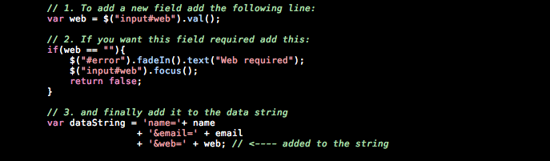

“caja” Documentation by “ansimuz v1.0
“CAJA TEMPLATE”
Created: 01/06/2011
By: Luis Zuno aka ansimuz
Email: luis@luiszuno.com
Thank you for downloading my theme. If you like this file you may like some of my premium items found on themeforest portfolio Visit portfolio. Thanks so much!
Table of Contents
A) HTML - top
This theme is a fixed layout theme made in HTML 5 its perfect for corporate sites. It has 7 + different layouts and is very customizable using skins.
HTML STRUCTURE
The main layout is built from 7 main blocks each one contains a wrapper block to mantain the layout centered. There 7 main blocks are as follow:
- Header
- Main
- footer
- bottom
FILE LIST
The html folder contains all the necesary files to build a website it contains. you can find a PSD folder contianing all major layouts and elements folder for the web graphics.
TOOLTIPS
For the tooltips i am using a javascript library called poshytip its very easy to set up. The default browser tooltip that displays the value of the title attribute is replaced with a "poshier" version just add a title text and a class of poshytip.
Example
<a href="#" title="I am a tooltip" class="poshytip">Tool tip</a>
<img src="image.jpg" title="I am a tooltip" class="poshytip" alt="Image" />
TABS
I am using a javascript library for the tabs you can find the source and more documentation here.
Here is the minimal HTML code to get tabs working:
<!-- the tabs --> <ul class="tabs"> <li><a href="#">Tab 1</a></li> <li><a href="#">Tab 2</a></li> <li><a href="#">Tab 3</a></li> </ul>
<!-- tab "panes" --> <div class="panes"> <div>pane 1 content</div> <div>pane 2 content</div> <div>pane 3 content</div> </div>
CONTACT FORM
There are 2 files nedded filed needed for the FORM VALIDATION (js/form-validation.js) and the PHP (send-mail.php) that actually sends the data .
The HTML

Configuring the email recipients and data
To set the sender and the recipients just change the value for the hidden input values inside the contact.html.

Form validation
Form-validation.js This is the javascript validation for the fields.
How to add fields to the contact form:

B) CSS Files and Structure - top
This theme uses several css files contained in the css folder. Please note that the "skins/skin_name/style.css" may overwrite styles defined at the "css/style.css" file.
Changing or editing existing skins.
If you need to edit a skinedit the css files at the skins folder. Dont forget to include the skin name at the <head> section of top of the document.
<!-- CSS -->
<link rel="stylesheet" href="css/style.css" type="text/css" media="screen" />
<link rel="stylesheet" href="css/social-icons.css" type="text/css" media="screen" />
<link rel="stylesheet" href="name of the skins.css" type="text/css" id="css-skins" />
Please note. The "css/styles.css" imports essential external files at the the top of the file:
/* IMPORTS ------------------------------------------------------------*/
@import url('reset.css');
@import url('styled-elements.css');
/* HACKS ------------------------------------------------------------*/
.clear{
clear:both;
height:1px;
}
.inv{ display:none; }
.alignleft{
float: left;
margin: 5px 10px 5px 0px;
}
C) Image Files - top
All the slides are contained at the "images" folder.
All the graphic elements for the entire theme are contained at the "img" folder.
The mockup images used to feed the site are contained at the "img/dummies" folder.
All the background patterns are stored at the "img/bg" folder.
D) JavaScript - top
All the pages link the neccessary js files inside the "head" tag of the document. If you need to modify the behavior from a certain jquery element open the "js/custom.js" file. where you can alter the parameters of some of the js elements.
You will find the call to the next fucntions:
Poshytips
Superfish menu
Scroll to top
Rollover functions
Tabs
Pop ups windows
slides
E) PSD Files - top
The included image files in the downloadable package contain PSD and PNG files used in the layout
Open the "PSD/theme-PSD" folder to discover the main four psd layouts for the theme. All this files are fully editable and well organized on folders and layer naming for easy manipulation:
main.psd
At the "PSD/elements" you will find the isolated graphics for the important graphics for the site.
stars.psd
F) Sources and Credits - top
I've used the following images, icons or other files as listed.
JAVASCRIPT
- jQuery http://jquery.com/
- jqueryui . Jquery ui Home page.
- jQuery Easing Plugin http://gsgd.co.uk/sandbox/jquery/easing/
- Jquery tabs http://flowplayer.org/tools/tabs/
- PrettyPhoto http://www.no-margin-for-errors.com/projects/prettyphoto-jquery-lightbox-clone/
- DD_belatedPNG http://www.dillerdesign.com/experiment/DD_belatedPNG/
- Superfish http://users.tpg.com.au/j_birch/plugins/superfish/
- Google fonts api http://fonts.googleapis.com/
- Scrollto http://flesler.blogspot.com
- Poshytip http://vadikom.com/tools/poshy-tip-jquery-plugin-for-stylish-tooltips/
- tabs http://flowplayer.org/tools/tabs/
- slides http://slidesjs.com/
IMAGES
- Social icons http://www.premiumpixels.com/
Once again, thank you for downloading this free file. I don't offer support on freebies however you can always look for help at http://luiszuno.com/free-forums/
ansimuz